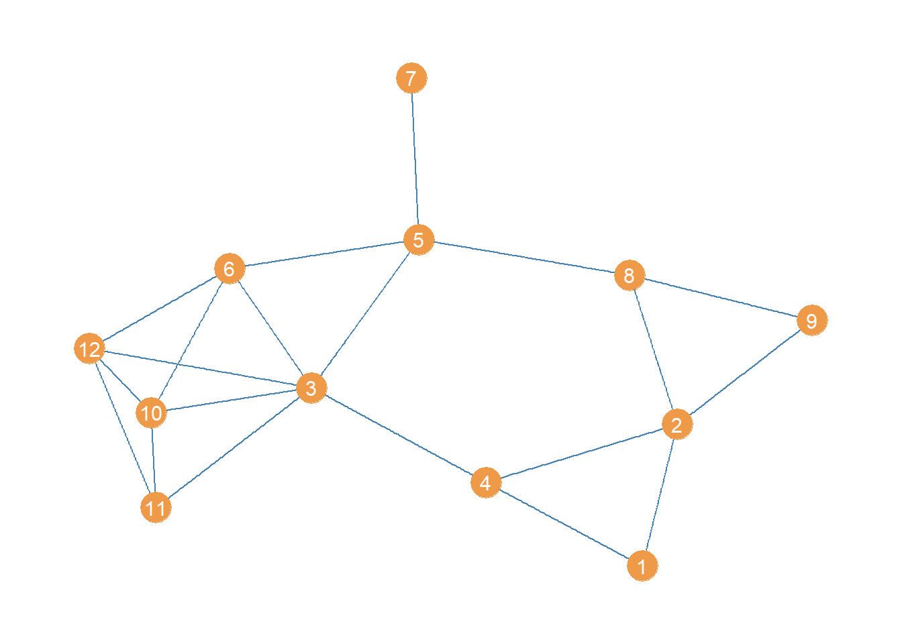
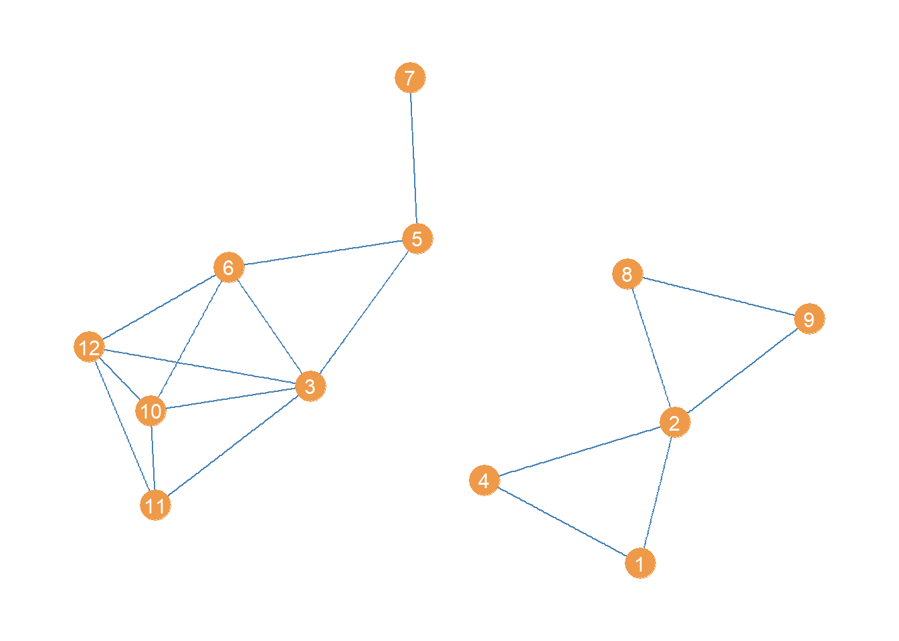

Edge Centralities
1 Edge Degree Centrality
Bröhl and Lehnertz (2022) propose to generalize the concept of degree centrality to the edge level. The basic idea is to consider an edge to be central if (1) its incident nodes also have high degree centrality, and (2) the difference between the degrees of the two nodes is relatively small (e.g., the centrality of the edge is not driven by only one of the two nodes).
This leads to the measure:
\[ C^{DEG}(e_{jk}) = \frac{C^{DEG}(v_j) + C^{DEG}(v_k) - 2}{|C^{DEG}(v_j) - C^{DEG}(v_k)| + 1} \tag{1}\]
Where the numerator of is just the sum of the degrees of nodes \(i\) and \(j\) minus 2 and the denominator is the absolute value of the differences of the degrees plus 1 (to avoid dividing by zero in the case of nodes with equal degree).
Let’s see how this works in real data. First, we load up our trusty Pulp Fiction network from the networkdata package
To compute edge degree centrality, we can use the same approach to data wrangling we used to compute the degree correlation. The goal is to create an edge list data frame containing five columns. The ids of the two nodes in the edge, the degree centralities of the two nodes in the edge, and the degree centrality of the edge calculated according to .
In the Pulp Fiction network this looks like:
Code
library(dplyr)
g.el <- as_edgelist(g) # transforming graph to edgelist
d <- degree(g) # degree centrality vector
c.dat <- data.frame(name1 = names(d), name2 = names(d), d)
el.temp <- data.frame(name2 = g.el[, 2]) %>%
left_join(c.dat, by = "name2") %>%
dplyr::select(c("name2", "d")) %>%
rename(d2 = d)
d.el <- data.frame(name1 = g.el[, 1]) %>%
left_join(c.dat, by = "name1") %>%
dplyr::select(c("name1", "d")) %>%
rename(d1 = d) %>%
cbind(el.temp) %>%
mutate(e.deg = (d1 + d2 - 2) / (abs(d1 - d2) + 1))
head(d.el) name1 d1 name2 d2 e.deg
1 Brett 7 Marsellus 10 3.750000
2 Brett 7 Marvin 6 5.500000
3 Brett 7 Roger 6 5.500000
4 Brett 7 Vincent 25 1.578947
5 Buddy 2 Mia 11 1.100000
6 Buddy 2 Vincent 25 1.041667To create a table of the top five degree centrality edges, we just order the data frame by the last column and table it:
Code
library(kableExtra)
d.el <- d.el[order(d.el$e.deg, decreasing = TRUE), ] %>%
dplyr::select(c("name1", "name2", "e.deg"))
kbl(d.el[1:5, ],
format = "pipe", align = c("l", "l", "c"),
col.names = c("i", "j", "Edge Degree"), row.names = FALSE,
caption = "Edges Sorted by Degree in the Pulp Fiction Network"
) %>%
kable_styling(bootstrap_options = c("hover", "condensed", "responsive"))| i | j | Edge Degree |
|---|---|---|
| Butch | Jules | 15.5 |
| Honey Bunny | Pumpkin | 14.0 |
| Marvin | Roger | 10.0 |
| Marsellus | Mia | 9.5 |
| Capt Koons | Mother | 8.0 |
Interestingly, the edge degree brings together the most important “couples” in the film; the main two characters, along with Pumpkin & Honey Bunny, Marvin & Roger, and Marsellus & Mia.
2 Edge Closeness
Bröhl and Lehnertz (2022) define the closeness of an edge as a function of the closeness of the two nodes incident to it. An edge \(e_{jk}\) linking vertex \(v_j\) to \(v_k\) has high closeness whenever vertices \(v_j\) and \(v_k\) also have high closeness. m
More specifically, the closeness centrality of an edge is proportional to the ratio of the product of the closeness of the two nodes incident to it divided by their sum:
\[ C^{CLOS}(e_{jk}) = (E - 1)\frac{C^{CLOS}(v_j) \times C^{CLOS}(v_k)}{C^{CLOS}(v_j) + C^{CLOS}(v_k)} \tag{2}\]
Note that the equation normalizes the ratio of the product to the sum of the vertex closeness centralities by the number of edges minus one.
To compute edge closeness in a real network, we follow the same steps as we did with the edge degree above. The goal is to create an edge list data frame containing five columns. The ids of the two nodes in the edge, the closeness centralities of the two nodes in the edge, and the closeness centrality of the edge calculated according to .
In the Pulp Fiction network this looks like:
Code
g.el <- as_edgelist(g) # transforming graph to edgelist
c <- round(closeness(g), 3) # closeness centrality vector
c.dat <- data.frame(name1 = names(c), name2 = names(c), c)
el.temp <- data.frame(name2 = g.el[, 2]) %>%
left_join(c.dat, by = "name2") %>%
dplyr::select(c("name2", "c")) %>%
rename(c2 = c)
c.el <- data.frame(name1 = g.el[, 1]) %>%
left_join(c.dat, by = "name1") %>%
dplyr::select(c("name1", "c")) %>%
rename(c1 = c) %>%
cbind(el.temp) %>%
mutate(e.clos = round((ecount(g) - 1) * (c1 * c2) / (c + c2), 3))
head(c.el) name1 c1 name2 c2 e.clos
1 Brett 0.014 Marsellus 0.014 0.707
2 Brett 0.014 Marvin 0.014 0.792
3 Brett 0.014 Roger 0.014 0.639
4 Brett 0.014 Vincent 0.019 0.840
5 Buddy 0.011 Mia 0.014 0.622
6 Buddy 0.011 Vincent 0.019 0.660To create a table of the top five closeness centrality edges, we just order the data frame by the last column and table it:
Code
library(kableExtra)
c.el <- c.el[order(c.el$e.clos, decreasing = TRUE), ] %>%
dplyr::select(c("name1", "name2", "e.clos"))
kbl(c.el[1:5, ],
format = "pipe", align = c("l", "l", "c"),
col.names = c("i", "j", "Edge Clos."), row.names = FALSE,
caption = "Edges Sorted by Closeness in the Pulp Fiction Network"
) %>%
kable_styling(bootstrap_options = c("hover", "condensed", "responsive"))| i | j | Edge Clos. |
|---|---|---|
| Butch | Vincent | 1.165 |
| Jules | Marvin | 1.028 |
| Jules | Vincent | 1.023 |
| Butch | Mia | 1.002 |
| Jules | Patron | 1.000 |
Interestingly, the top closeness edges tend to bring somewhat strange bedfellows together, characters that themselves don’t spend much time together in the film (e.g., the Butch/Vincent interaction is relatively brief and somewhat embarrassing for Vincent) but who themselves can reach other character clusters in the film via relatively short paths.
3 Edge Betweenness
Edge betweenness centrality is defined in similar fashion as node betweenness:
\[ C^{BET}(e_{jk}) = \sum_{i,j} \frac{\sigma_{i(e)j}}{\sigma_{ij}} \]
Where \(\sigma_{i(e)j}\) is a count of the number of shortest paths between i and j that feature edge e as an intermediary link. This tells us that the betweenness of an edge e is the sum of the ratios of the number of times that edge appears in the middle of a shortest path connecting every pair of nodes in the graph i and j divided by the total number of shortest paths linking each pair of nodes.
Like with node betweenness, the edge betweenness with respect to a specific pair of nodes in the graph is a probability: Namely, that if you send something–using a shortest path–from any node i to any other node j it has to go through edge e. The resulting edge betweenness scores is the sum of these probabilities across every possible pair of nodes for each edge in the graph.
For this example, we will work with a simplified version of the young women lawyers advice network, in which we transform it into an undirected graph. We use the igraph function as.undirected for that:
The “collapse” value in the “mode” argument tells as.undirected to link every connected dyad in the original directed graph using an undirected edge. It does that by removing the directional arrow of the single directed links and collapsing (hence the name) all the bi-directional links into a single undirected one.
The resulting undirected graph looks like this:

Looking at this point and line plot of the women lawyers advice network, which edge do you think has the top betweenness?
Well no need to figure that out via eyeballing! We can just use the igraph function edge_betweenness:
The edge_betweenness function takes the igraph graph object as input and produces a vector of edge betweenness values of the same length as the number of edges in the graph, which happens to be 20 in this case.
Using this information, we can then create a table of the top ten edges ordered by betweenness:
Code
edges <- as_edgelist(wg) # creating an edgelist
etab <- data.frame(edges, bet = round(w.ebet, 2)) # adding bet. scores to edgelist
etab <- etab[order(etab$bet, decreasing = TRUE), ] # ordering by bet.
kbl(etab[1:10, ],
format = "pipe", align = c("l", "l", "c"),
col.names = c("i", "j", "Edge Bet."), row.names = FALSE,
caption = "Edges Sorted by Betweenness in the Women Lawyers Advice Network"
) %>%
kable_styling(bootstrap_options = c("hover", "condensed", "responsive"))| i | j | Edge Bet. |
|---|---|---|
| 3 | 4 | 19.17 |
| 5 | 8 | 15.83 |
| 3 | 5 | 13.67 |
| 5 | 7 | 11.00 |
| 2 | 4 | 9.17 |
| 3 | 11 | 8.33 |
| 5 | 6 | 8.17 |
| 1 | 4 | 7.00 |
| 2 | 8 | 6.50 |
| 8 | 9 | 6.33 |
Not surprisingly, the top edges are the ones linking nodes 3 and 4 and nodes 5 and 8.
3.1 Disconnecting a Graph Via Bridge Removal
High betweenness edges are likely to function as bridges being the only point of indirect connectivity between most nodes in the social structure. That means that an easy way to disconnect a connected graph is to remove the bridges (Girvan and Newman 2002).
In igraph we can produce an edge deleted subgraph of an original graph using the “minus” operator, along with the edge function like this:
The first line creates a new graph object (a subgraph) which equals the original graph minus the edge linking nodes 3 and 4. The second line takes this last subgraph and further deletes the edge linking nodes 5 and 8.
The resulting subgraph, minus the top two high-betweenness edges, looks like:

Which is indeed disconnected!
We will see that this approach can be used as the basis for an algorithm to find communities (clusters of densely connected nodes) in networks in the lecture notes on community detection
References
Bröhl, Timo, and Klaus Lehnertz. 2022. “A Straightforward Edge Centrality Concept Derived from Generalizing Degree and Strength.” Scientific Reports 12 (1): 4407.
Girvan, Michelle, and Mark EJ Newman. 2002. “Community Structure in Social and Biological Networks.” Proceedings of the National Academy of Sciences 99 (12): 7821–26.